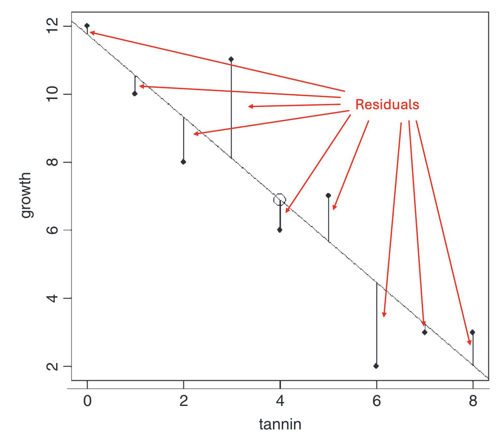
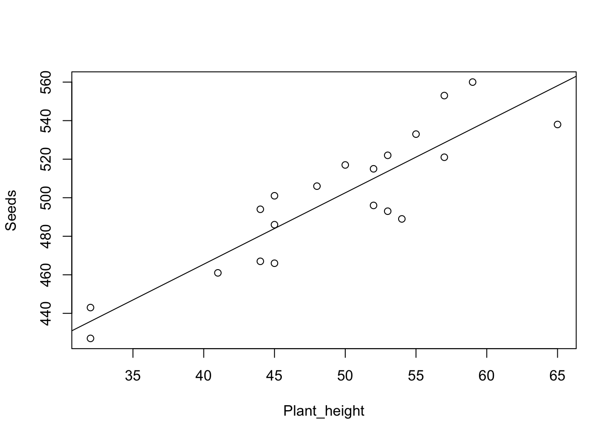
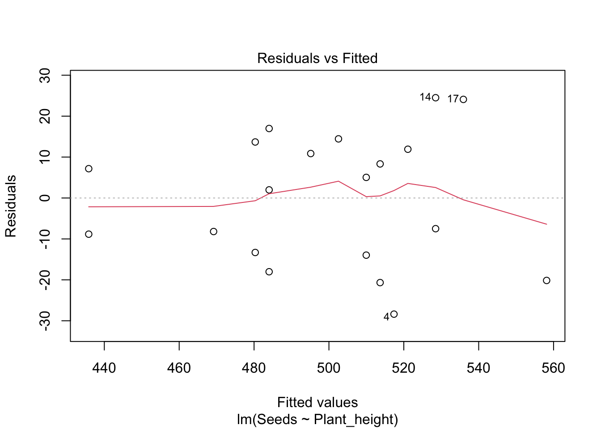
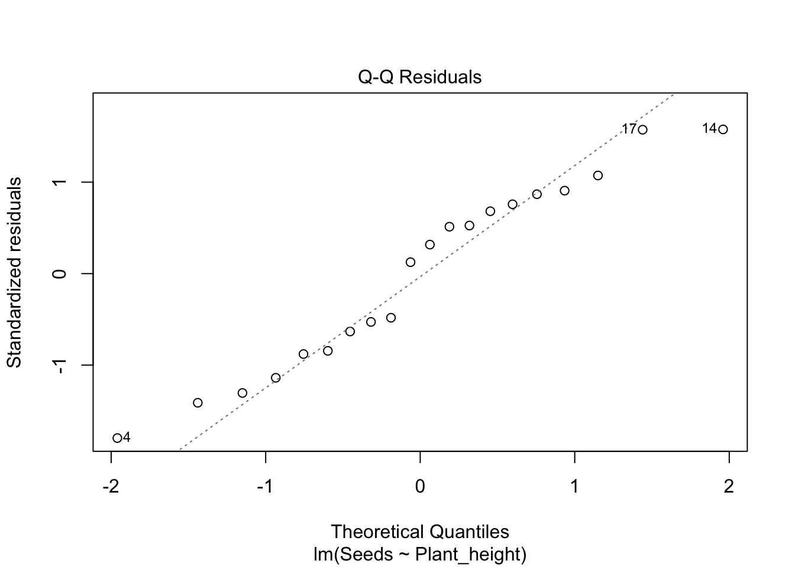
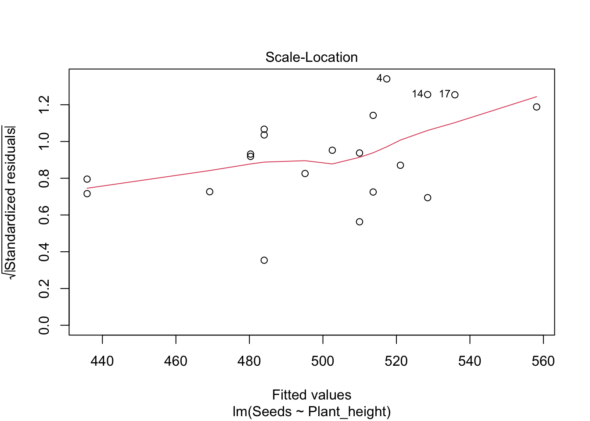

Code
plant_reproduction_data <- read.table("data/plant_reproduction.txt",
header=T,
sep="\t",
dec=",") En regressionsanalys används om man är intresserad av ett orsakssamband mellan två kontinuerliga variabler. Den man är intresserad av att förklara och som är y-axeln i en graf kallas responsvariabel (eller beroende variabel) medan den variabel som man vill förklara med kallas prediktor (eller oberoende variabel) och utgör x-axeln.
Den enklaste typen av regression är en linjär regression. När man behärskar den linjära regressionen kan den enkelt byggas ut för att även studera icke-linjära samband, olika regressionslinjer för olika grupper och ännu mer avancerade samband.
En linjär regression har följande krav på datat
Residual En residual är skillnaden mellan ett mätvärda av responsvariabeln och det förutsagda värdet av responsvariabeln om det hade varit placerat exakt på regressionslinjen. Ju längre från linjen (i y-led) en punkt ligger, desto större residual.

Vi vill undersöka reproduktionen hos en växt, och har mätt höjden på 20 plantor. Vi har även räklnat hur många från varje planta har. Nu vill vi ta reda på om antalet från beror på deras höjd.
Ladda ner följande fil plant_reproduction.txt (högerklicka, välj “spara länk som”) och spara filen på din hårddisk i en mapp med ett lämpligt namn.
Fortsätt med att läsa in datasetet och ge det ett namn, i det här fallet kallar vi det plant_reproduction_data. En detalerad beskrivning i hur man läser in filer finns i vår tidigare tutorial Läsa in data i R.
plant_reproduction_data <- read.table("data/plant_reproduction.txt",
header=T,
sep="\t",
dec=",") <- betyder att vi sparar resultatet av funktionen (i det här fallet read.table() i ett objekt. Pilen pekar på objektet, och vi ger objektet ett namn, i det här fallet plant_reproduction_data.
read.table är kommandot för att läsa in textfiler med ändelsen .txt
"data/plant_reproduction.txt" är sökvägen till platsen där datafilen är sparad på din dator(data/), samt namnet på filen (plant_reproduction.txt).
header=Tbetyder att första raden i filen är kolumnernas rubriker, dvs inte värden.
sep=T betyder att alla värden är separerade med TAB.
dec="," betyder att komma används som decimalavgränsare (ex. 1,32).
Börja med att titta på datans struktur med str().
str(plant_reproduction_data)'data.frame': 20 obs. of 2 variables:
$ Seeds : int 466 501 467 489 496 521 522 517 506 427 ...
$ Plant_height: int 45 45 44 54 52 57 53 50 48 32 ...$ Nutrient_level: chr betyder att värderna i kolumnen Nutrient_level är karaktärer dvs text och inte siffror.
$ Mass: num betyder att värderna i kolumnen Mass är decimaltal
Om du har en kolumn som innehåller decimaltal skall det stå num. Om det istället står chr betyder det att datat har punkt som decimalavgränsare, medan du läste in det med komma som avgränsare (eller tvärtom) och R tror att det är text. Justera koden och läs in datat på nytt (se vår tidigare tutorial Läsa in data i R för justerad kod).
Visa sedan de fem första raderna av ditt dataset med head() för att se att allt ser korrekt ut
head(plant_reproduction_data) Seeds Plant_height
1 466 45
2 501 45
3 467 44
4 489 54
5 496 52
6 521 57Vi gör en graf med plot() och lägger sedan till en regressionslinje med abline()
För att göra grafen måste vi bestämma oss vad som skall vara på x-axeln, och vad som skall vara på y-axeln. Vilket av följande påstående är mest logiskt?
Växtens storlek påverkar hur många frön den har
Antalet frön en växt har påverkar dess storlek
ALternativ A är det som är mest logiskt. Alltså är det antalet frön som beror av växtens storlek. Därför skall vi ha antalet frön (Seeds) på y-axeln, och växtens storlek (Plants_height) på x-axeln.
plot(Seeds~Plant_height,data=plant_reproduction_data)
abline(lm(Seeds~Plant_height,data=plant_reproduction_data))
Hur tolkar du grafen? Verkar det som att plantans höjd påverkar antalet frön den har?
Vi vill nu göra en regressionsanalys för att undersöka om vår responsvariabel (beroende variabel) Seeds beror av vår förklarande variabel (oberoende variabel) Plants_height.
Vi specificerar en linjär modell med hjälp av funktionen lm() och väljer att spara resultatet i ett objekt som vi kallar m.plant_reproduction. Jag föredrar att alla mina modeller (resultat av statistka test) har ett namn som börjar med m. för att jag skall veta vad som är dataset och vad som är modeller. Ge alltid dina modeller beskrivande namn.
m.plant_reproduction<-lm(Seeds~Plant_height,
data=plant_reproduction_data)I vår modell har vi vår responsvariabel (det vi har på y-axeln) till vänster om tilde-tecknet ~ och vår förklarande variabel till höger. data=plant_reproduction_data betyder att vi använder oss av datasetet vi tidigare döpt till plant_reproduction_data.
Vi börjar med en ANOVA-tabell, och använder funktionen anova()
anova(m.plant_reproduction)Analysis of Variance Table
Response: Seeds
Df Sum Sq Mean Sq F value Pr(>F)
Plant_height 1 18361 18360.8 68.681 1.477e-07 ***
Residuals 18 4812 267.3
---
Signif. codes: 0 '***' 0.001 '**' 0.01 '*' 0.05 '.' 0.1 ' ' 1Vi får en ANOVA-tabell och kan inspektera resultatet. Vi ser att p-värdet (här kallat Pr(>F)) är mindre än 0.05, dvs Plant_height har en signifikant effekt på Seeds. R indikerar även att det är signifikant genom att lägga till en eller flera stjärnor *. När du rapporterar p-värden i skrift anger du p-värdet med tre decimaler, eller “p < 0.001” vid väldigt låga p-värden.
Är det en positiv eller negativ effekt av Plant_height påSeeds? För att veta det behöver vi ta fram skattningen av alla parametrar i modellen, dvs var x-axeln skär y-axeln, och linjens lutning. För det användervi oss av funktionen summary().
summary(m.plant_reproduction)
Call:
lm(formula = Seeds ~ Plant_height, data = plant_reproduction_data)
Residuals:
Min 1Q Median 3Q Max
-28.376 -13.475 3.509 12.360 24.505
Coefficients:
Estimate Std. Error t value Pr(>|t|)
(Intercept) 317.2300 22.2835 14.236 3.08e-11 ***
Plant_height 3.7064 0.4472 8.287 1.48e-07 ***
---
Signif. codes: 0 '***' 0.001 '**' 0.01 '*' 0.05 '.' 0.1 ' ' 1
Residual standard error: 16.35 on 18 degrees of freedom
Multiple R-squared: 0.7923, Adjusted R-squared: 0.7808
F-statistic: 68.68 on 1 and 18 DF, p-value: 1.477e-07Coefficients ger oss fakta om koefficienterna. Jämför gärna med figuren ni gjorde ovan. (Intercept) är värdet på y-axeln när x-axeln är noll, dvs där regressionslinjen skär y-axeln. Vi ser att den skär y-axeln vid 317.2300 och att p-värdet (Pr(>|t|)) är 3.08e-11 det vill säga mindre än 0.05, dvs interceptet är signifikant skiljt från noll. Plant_height är lutningen på regressionslinjen. Den har lutningskoefficienten 3.7064 och eftersom den inte börjar med ett minustecken vet vi att det är ett positivt samband mellan Plants_height ochSeeds (plustecken skrivs aldrig ut)
R-square beskriver hur mycket av variationen i datat som förklaras av din statistiska modell. Kan gå från 0 (ingenting förklaras) till 1 (allt förklaras). R ger dig två värden, nämlingen Multiple R-squared och Adjusted R-squared. Använd Adjusted R-squared eftersom den tar hänsyn till antal parametrar i modellen.
Antalet frön ökad med ökad höjd (linjär regression, F1,18 = 68.681, p < 0.001, R2 = 0.78).
Var modellen lämplig att använda för ditt dataset?
Vi utvärderar modellen genom diagnostiska grafer genom att använda funktionen plot() på vår statistiska modell.
plot(m.plant_reproduction)



Vi får fyra grafer att utvärdera, de två första är viktigast. Du kan behöva trycka upprepade gånger på ENTER för att se alla graferna (i R kommer de en och en).
Residuals vs Fitted bör visa en hyfsat rak linje. Den visar hur mycket residualerna (skillnaden i y-led mellan varje värde av din response och regressionslinjen) avviker från regressionslinjen. Residualerna motsvaras av cirklar i grafen. Om du har ett mönster i avvikelserna så betyder det att en rak regressionslinje inte var en lämplig statistisk modell.
Normal Q-Q visar om residualerna är normalfördelade. De bör följa den diagonala streckade linjen. Om de avviker på ett systematiskt sätt är residualerna inte perfekt normalfördelade, och vi kan behöva förändra modellen, exempelvis genom att transformera data.
Scale-Location illustrerar om variationen i datat är lika över alla värden. Om variationen ökar mycket åt höger (ett vanligt fall) så har vi större variation vid högre värden. Kan lösas genom att transformera data.
Residuals vs Leverage används för att hitta extremvärden som har onormalt stor påverkan på regressionslinjen. Mönstret i grafen är inte intressant, vi letar efter värden som ligger utanför de grå linjerna, speciellt linjerna för 1. Man bör dubbelkolla sådana värden (outliers) och fundera på om de skall vara med i datasetet. Kanske analysera såväl med som utan extremvärderna?